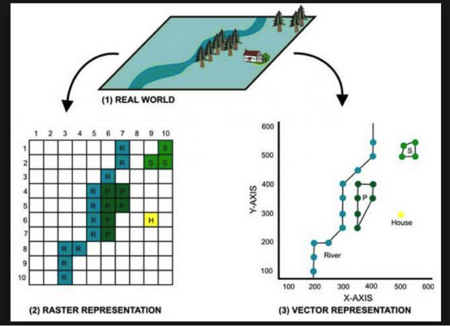
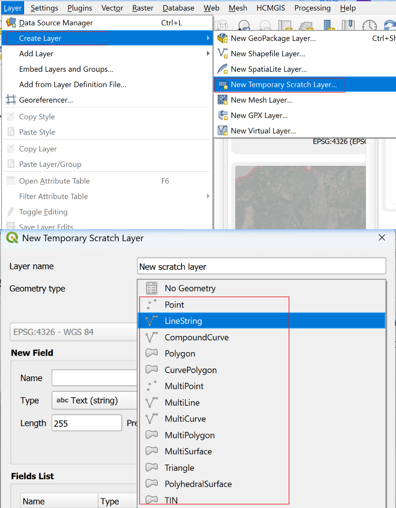
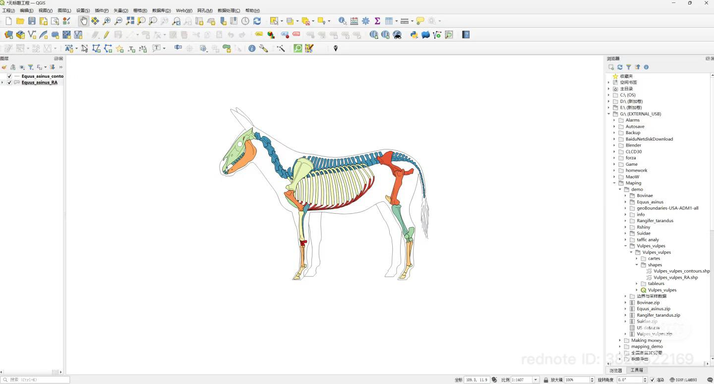
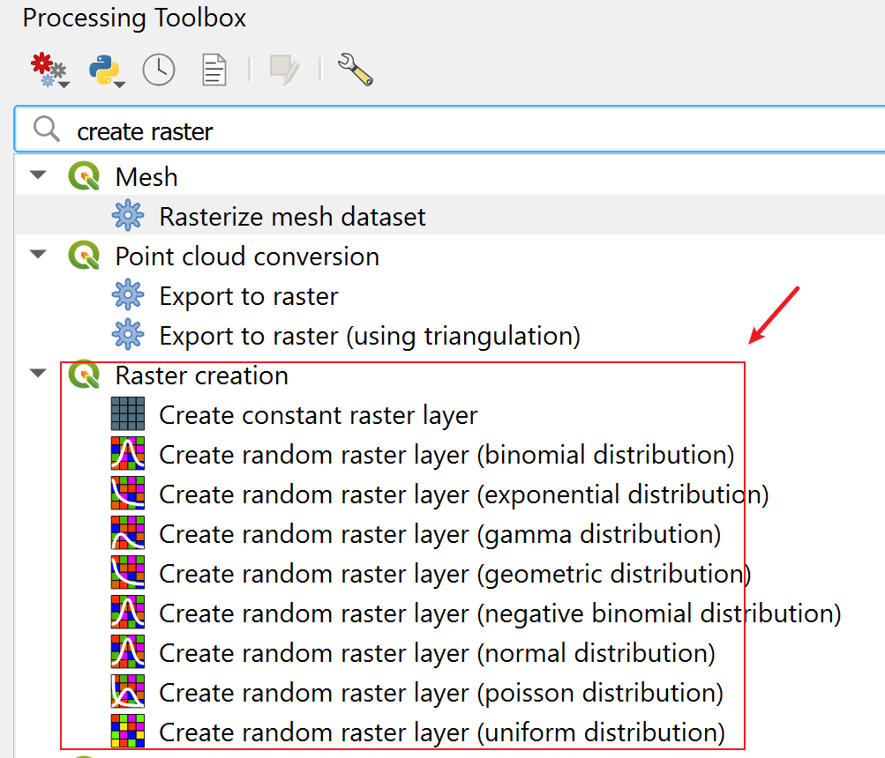
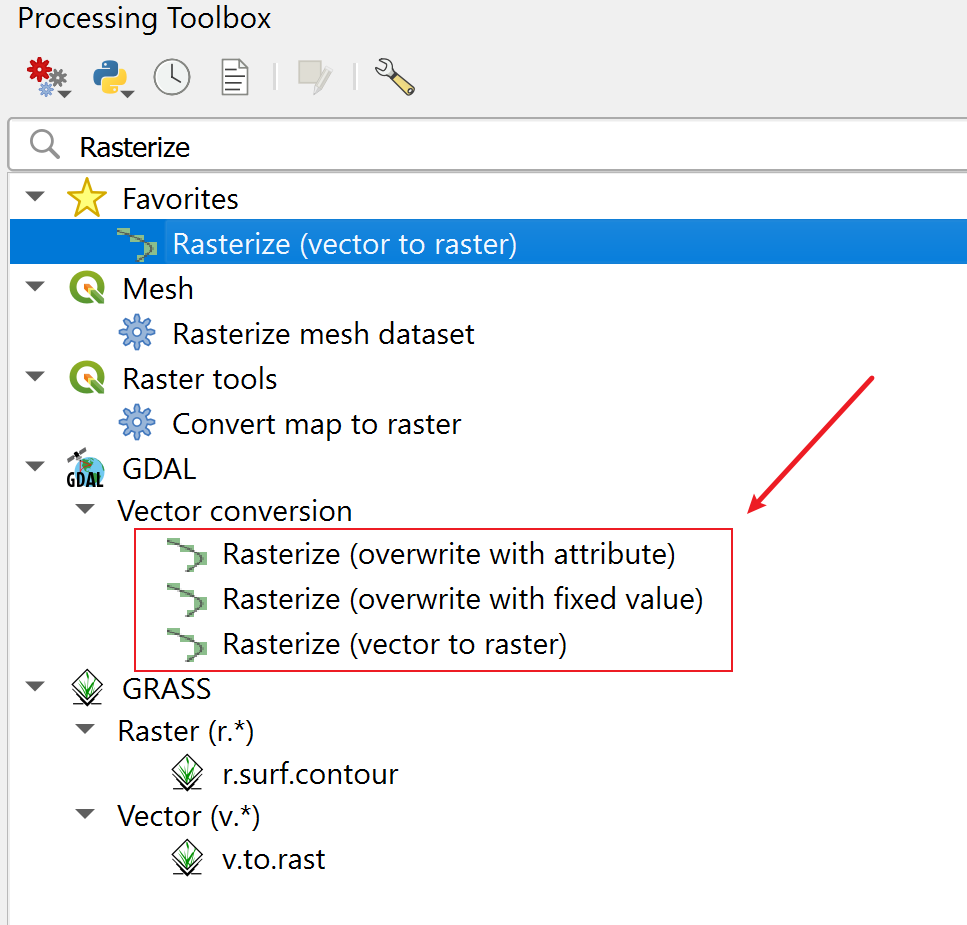
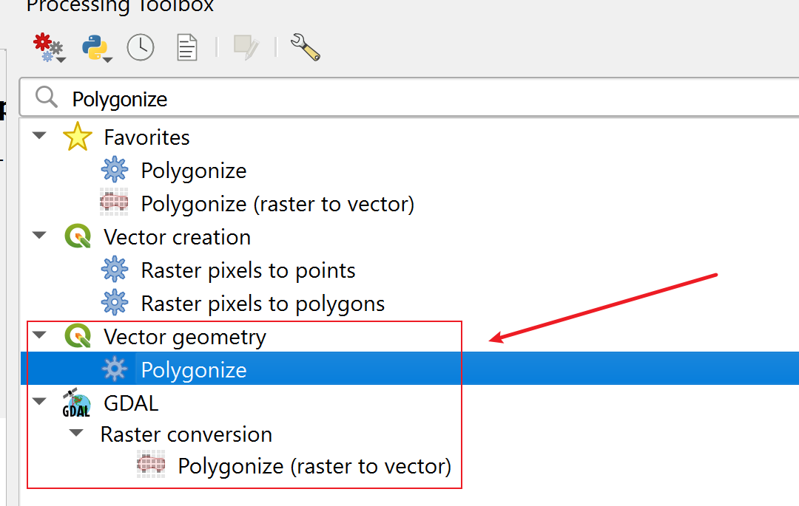
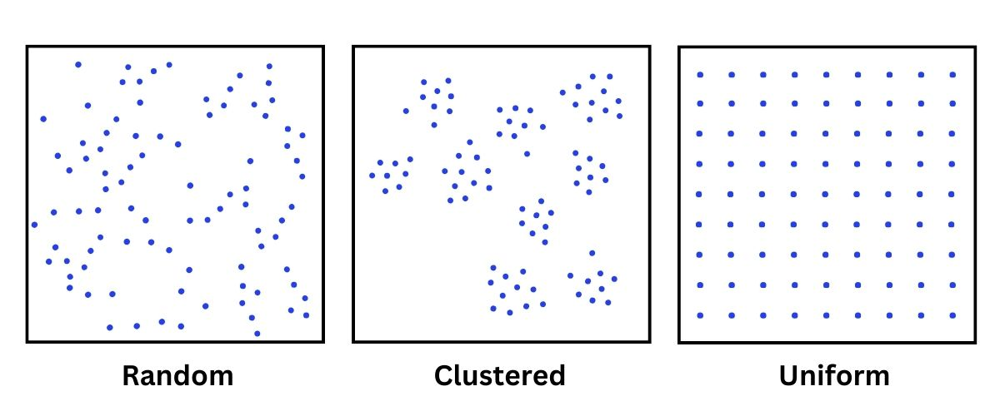
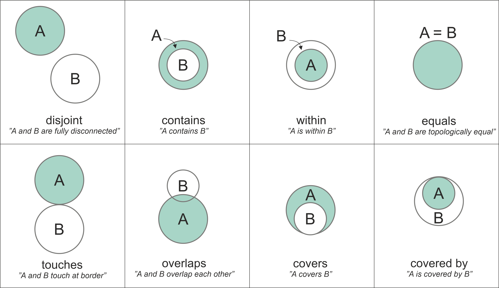
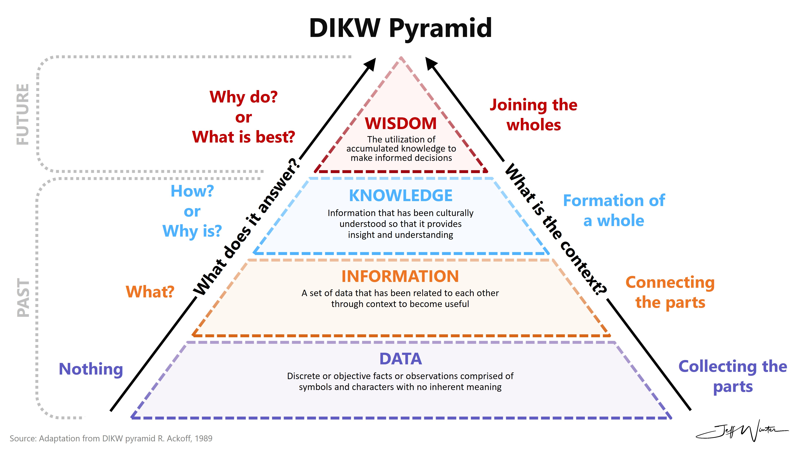

class: center <br> # Spatial Analysis of Urban Data [Bayi Li](mailto:barryli081@gmail.com) <br> .toc-wrapper[ <div class="toc"> <a href="vector.html" class="toc-item">Spatial Analysis of Vector Data</a> <a href="raster.html" class="toc-item">Spatial Analysis of Raster Data</a> <a href="network.html" class="toc-item">Spatial Network Analysis</a> <a href="appliedgis.html" class="toc-item">Urban Studies and Applied GIS</a> </div> ] ??? The session will cover the fundamental concepts of spatial analysis, types of spatial data, and the formulation of related research questions in urban studies. In the following weeks, vector, raster, and network, three main types of spatial data, will be introduced, along with their respective analysis techniques and applications in urban contexts. --- # Definition of Spatial Analysis -- **Quantitative analysis** of **spatial data** 1. **Quantitative analysis** 2. **spatial data** ??? Spatial analysis can be easily defined as quantitative analysis of spatial data. It can be disaggregated into two key components: quantitative analysis and spatial data. The former describes a general approach, while the latter specifies the type of data being analyzed. -- **Quantitative analysis**: Exploration of spatial data involves describing **patterns** and understanding the nature of underlying **relationships**. 1. **Patterns** 2. **Relationships** ??? Spatial analysis can be easily defined as quantitative analysis of spatial data. It can be disaggregated into two key components: quantitative analysis and spatial data. The former describes a general approach, while the latter specifies the type of data being analyzed. Let's first focus on quantitative analysis. In general, quantitative analysis of spatial data involves two main aspects: describing patterns and understanding relationships. --- ## Vector and Raster Data Spatial data is primarily represented using two major models: <div align="center"> <figure> <p></p> <figcaption>Raster and vector representation of real world entities.</figcaption> <figsubcaption>Source: Unknown authour, https://gis.stackexchange.com/questions/7077/what-are-raster-and-vector-data-in-gis-and-when-to-use</figsubcaption> </figure> </div> --- .right_half[ <figure> <p></p> </figure> ] ## Vector with QGIS QGIS can create spatially-referenced vector data: --- ## Vector with QGIS It can also be used to produce drawings that are not spatially meaningful: <div align="center"> <figure> <p></p> <figcaption>Using QGIS to produce non-spatial drawings.</figcaption> <figsubcaption>Source: https://www.xiaohongshu.com/discovery/item/6904d0d600000000030377eb?source=webshare&xhsshare=pc_web&xsec_token=CBGXxowpqIt_s8GpdYLDW6OcD31ABfaSln-8xkjALawQE=&xsec_source=pc_share</figsubcaption> </figure> </div> --- .right_half[ <figure> <p></p> </figure> ] ## Raster with QGIS Raster layers need more parameters and structure, so QGIS uses specialized tools to ensure they’re correctly set up. You need to define resolution, extent, data type (e.g., integer, float), and sometimes initial values. -- <xL>You can also create drawing using raster layer if you want.</xL> --- ## Comparison: Vector and Raster Data Model Rule of Thumb: - Use vector for objects with **clear boundaries and relationships**. - Use raster for **continuous data** or when performing spatial modeling that requires **grid-based calculations**. | | | Raster | |Vector | |-------------|---------|---------------------------------------------|---------|------------------------------------------------------| |Advantages | * | Simple Data Structure | * | More compact | | | * | Efficiency in overlay operations | * | Efficiency in topology-based operations | | | * | Better representing high spatial variability| * | Better map visualisation | | | * | Widely used in remote sensing and image data| | | |Disadvantages| * | Less compact | * | More complex | | | * | Underrepresented topological relationship | * | Inefficient representation of high spatial variablity| | | * | Disadvantages in visualisation | * | Unable to handle image data | | | * | Less compact | | | --- ## Interconversion between Vector and Raster Data ### Vector to Raster Conversion (Rasterisation) <div align="center"> <figure> <p></p> </figure> </div> ### Raster to Vector Conversion (Vectorisation/Polygonisation) <div align="center"> <figure> <p></p> </figure> </div> --- ## Spatial Patterns Patterns turn raw spatial data into meaningful geographic insight. <div align="center"> <figure> <p></p> <figcaption>Different types of spatial patterns of points.</figcaption> <figsubcaption>Source: https://gisgeography.com/spatial-patterns/</figsubcaption> </figure> </div> ??? Taking this spatial points as an example, we can observe different types of spatial patterns, including random, clustered and uniform patterns. It is a way to describe how spatial phenomena are distributed in space. --- ## Spatial Relationships Topological spatial relations are fundamental constructs that describe how two or more geometric objects relate to each other. <div align="center"> <figure> <p></p> <figcaption>Different types of spatial relations based on two Polygon geometries.</figcaption> <figsubcaption>Source: Egenhofer et al. (1992) and https://pythongis.org/part2/chapter-06/nb/05-spatial-queries.html</figsubcaption> </figure> </div> ??? What is spatial analysis? --- ## Extended Definition of Spatial Analysis ### Spatial data analysis Understanding the **spatial distribution, patterns, and relationships** within the data. <br> ### Spatial statistical analysis To test whether the spatial dataset exhibits **significant patterns or relationships**. Location is analysed as an attribute on top of conventional data analysis. <br> ### Spatial modelling Models to **explain or predict spatial phenomena** by simulating real-world processes or evaluating different scenarios <br> ### Spatial data manipulation **Creation, transformation, and management** of spatial data ??? Spatial analysis can be interpreted with different weights based on specfic context. --- ## Spatial Analysis: From Data to Wisdom .right_half[ <figure> <p></p> <figcaption>Data, Information, Knowledge, Wisdom (DIKW) Pyramid.</figcaption> <figsubcaption>Source: R. Ackoff (1989) and https://www.jeffwinterinsights.com/insights/dikw-pyramid</figsubcaption> </figure> ] Spatial analysis can reveal things that might otherwise be invisible – it can **make what is implicit explicit** <br> Spatial analysis adds to the value of geographic data and can **turn data into useful information** <br> Effective spatial analysis requires **an intelligent user**, not just a powerful computer <br> -- <xL>How can we compose a full process for acquiring wisdom through spatial analysis?</xL> --- ## From Exploration to Explanation Different spatial analysis projects have different aims, so the framework must align the aim with the methods. | | **Exploratory** | | **Descriptive** | | **Explanatory** | |-| ------------------------------------------------------------ |-| ------------------------------------------------------------ |-| ------------------------------------------------------------ | |*| Aim -> |*| Aim -> |*| Aim -> | | | To discover patterns, trends, or anomalies in spatial data without starting from a clear hypothesis. | | To characterise and summarise spatial phenomena, often through quantification and comparison. | | To understand causation or association between spatial variables and to test hypotheses. | |*| Example -> |*| Example -> |*| Example -> | | | “What spatial patterns emerge from mapping daily pedestrian movement across Singapore's park network?” | | “How does accessibility to hawker centres vary across housing types in Singapore?” | | “To what extent do covered linkways influence the frequency of pedestrian movement across urban neighbourhoods?" | <br> -- <xL>Thinking of the spatial data you have collected, what kind of research questions can you extract from them?</xL> --- <xL>Is your data sufficient to answer your research question?</xL> <br> <xL>Identify an appropriate spatial analysis method that aligns with both your data and research question.</xL> <br> -- <xL>Start from vector first: </xL><button onclick="window.location.href='vector.html'">Go to Lecture of Vector Data Analysis</button>